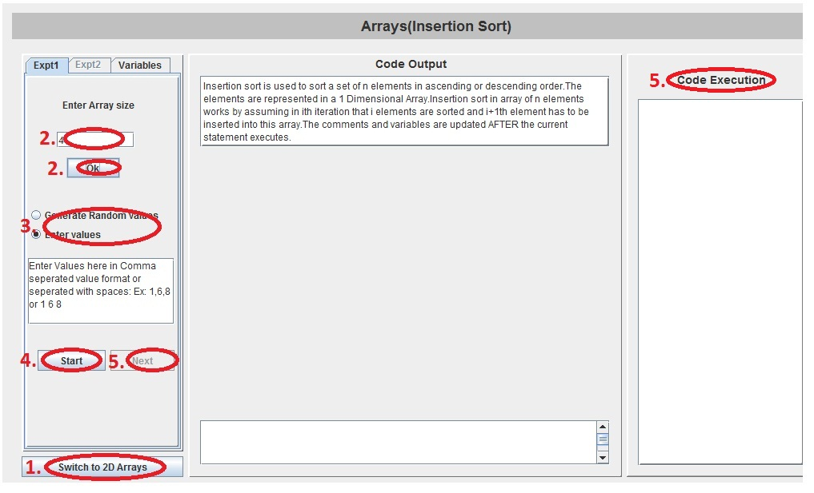

An array is a group of items which have similar nature.
Arrays play a significant role in any programming language, as they allow the programmer to store more than one value in a variable. That is, you can use the same variable name to refer to all the values. An array is analogus to a shelf with many identical compartments. To identify a compartment, you just need to specify its position. Similarly, in a array variable, you can store many values of a single datatype. For example: 10 integers, 4 floating numbers, 12 characters etc. Not surprisingly, an array variable takes larger memory than a single variable of a datatype.
We can use the same name to access the values, but how do we differentiate between them. To do this we use an index into the array. For example, take an array(myArray) of 100 integers, we can access the hundredth unit:
myArray[99] = 3;
Notice something unusual? The index is usually zero based. So, the hundredth element is shown accessed using [99]. In other words, the index to the first item is at [0] and the index to the last item is [#elements -1].

Array is a data structure consisting of a collection of elements of same datatype. This collection is arranged in a way such that each element can be uniquly identified and addressed. These adresses are called indices. These are integer values. The memory allocation for an array is done contigously. For example, an array of 10 integer variables, with indices 0 through 9, may be stored as 10 words at memory addresses 2000, 2004, 2008 to 2036 (this memory allocation can vary because some computers use other than 4 bytes to store integer type vrables), so that the element with index i has address 2000 + 4*i . Hence, the address of each element can be computed from its index by a simple mathematical formula.
Arrays are different from structure because structures can have elements of different datatypes. We can also make an array of equally sized arrays. In that case, we call that array a multi dimensional array. Please note again that an array is a collection of similar elements. So, can make only an array of arrays of same datatype having same lengths. And hence, we cannot create an array of 10 elements containing 5 integer arrays and 5 integers. But as showing the example below, we can create an multidimensional array of 10 integer arrays each having a size of 20 elements. Now, We will require 2 indices for referencing an element of the multidimensional array. The first one is used to specify the array and the second one is used to specify the location in the array. For example:
int arr[10][20]; arr[5][3]=1;
In this case, the first sentence is used to declare a multi dimensional array containing 10 arrays and the size of each array is 20. In the second sentence, the 4th element of the sixth array will be assigned a value 0. As explained earlier, this is because the indexing in arrays begins with 0. And hence, arr[5][3] refers to the sixth array and its fourth element.
Similarly, let us declare a 3 dimenesional array, which in simple terms would be an array containing an array of 2 dimensional arrays each of identical size and same datatype. So, for accessing one element in this array we will need 3 indices. For example,
int arr[10][20][30]; arr[2][3][4]=1;
The first sentence declares an array of 10 2-dimensional arrays. Each of these 2-dimensional arrays contains 20 arrays of size 30 integers. The next line assigns a value 1 to the 5th element of the 4th array of the 3rd 2-dimensional array of the 3 dimensional integer array named arr. Each of these elements can be accessed using 3 for loops, for example:
for(int i=0;i<10;i++) for(int j=0;j<20;j++) for(int k=0;k<30;k++) arr[i][j][k]=0;
It can be argued that every array can be replaced by declaring an equivalent set of distinct variables. For example,
int arr[5];
can be replaced by
int a,b,c,d,e;
Now, let us take an example which show the utility of arrays over an equivalent set of variables. Let us consider that you want to take as input 10 numbers and then for the input(x) given by user from 2 to 9 you want to display the average with neighbouring numbers i.e. the x-1, x and x+1th numbers. We can easily solve this problem using an array:
int main()
{
int arr[10];
printf("Enter 10 numbers\n");
for(i=0;i<10;i++)
scanf("%d",&arr[i]);
printf("Enter an index(2-9) to find
average with neighbouring values\n");
int x;
scanf("%d",&x);
printf("Average with neighbouring values is %d",
(arr[x-1]+arr[x]+arr[x+1])/3);
return 0;
}
Note how easy arrays make to find out the neighboring elements of any number. Writing a equivalent program by replacing arr[10] with 10 different variables will require a very complex program having many if else conditions or a switch statement with many cases. Try imagining a case having 100 or 1000 such variables.

1. To learn how to use arrays for storing large amount of data.
2. To learn how to use array to create a common reference for a large number of variables.


Here you will do two experiments relating to sorting of elements of an array and multiplying 2 matrices.


- Choose experiment type by pressing the "Switch experiment" button on the bottom left.
For Experiment 1:
- Enter the size of array for selected problem and press OK.
- Use Enter values to enter your own values in the box provided below for press Generate random values to generate a set of random values.
- Press Start to start the experiment. At any time the experiment can be restarted by pressing reset.
- Click Next to get a step by step execution of the code along with comments which are displayed at the bottom.

For Experiment 2:
- Enter the size of rows and columns for array A and press OK.
- Press Generate random values to generate a set of random values.
- Enter the size of columns for array B and press OK.
- Press Generate random values to generate a set of random values.
- Press Start to start the experiment. At any time the experiment can be restarted by pressing reset.
- Click Next to get a step by step execution of the code along with comments which are displayed at the bottom.